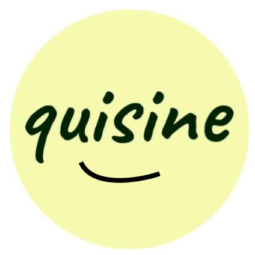

NASA Langley
Over the summer of 2019, Nicholas interned at NASA Langley Research Center. There at the NASA Academy he worked on obtaining aerodynamic coefficients of a future Martian lander.
Read moreNASA Kennedy
Currently Nicholas is an intern at NASA Kennedy Space Center. There he is assisting is the preparing a payload for suborbital flight.
Read more

quisine
Quisine is a reverse cookbook app with a twist. In addition, it won an award at a Hackathon and an entrepreneurship competition.
Read more